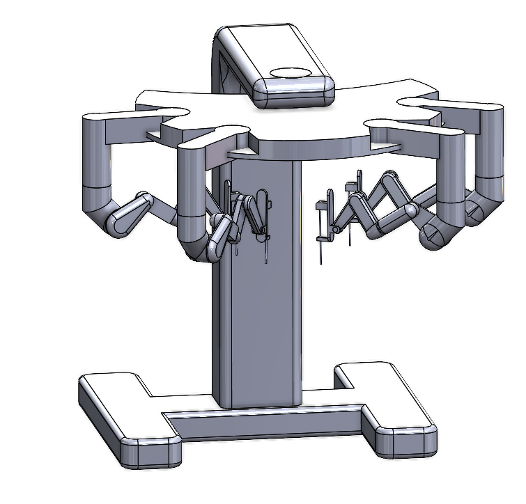

Surgical robot with arms that don't collide
An original four-arm surgical robot inspired by the da Vinci, designed in SolidWorks.

The problem
On the da Vinci system, the robotic arms can collide with each other during surgery. That limits where the arms can go and how the surgical team can set up around the patient.
What I built
I designed my own version with thinner arm links, so there is more clearance between neighboring arms. The whole system is modeled as one SolidWorks assembly.